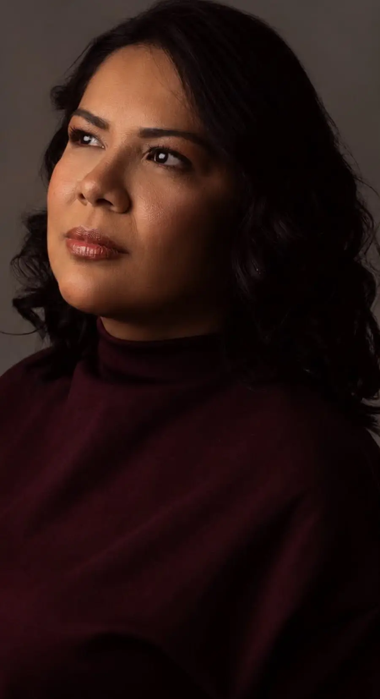
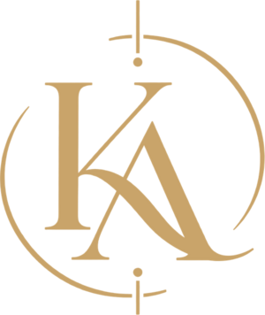
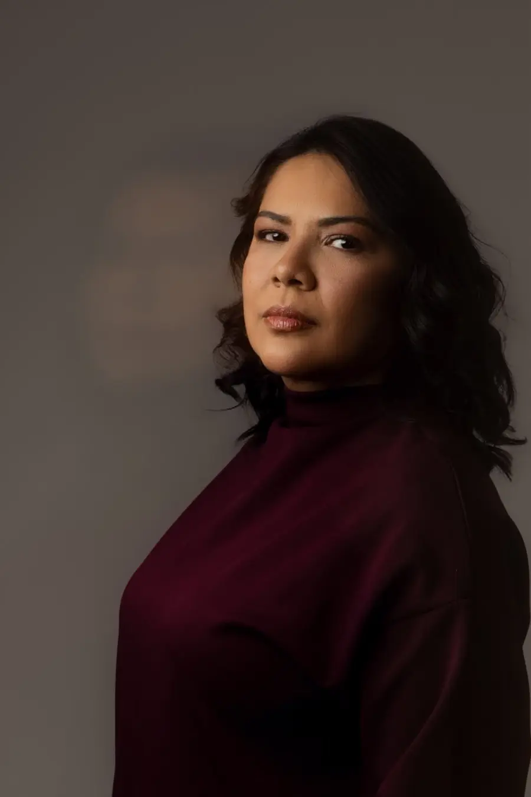
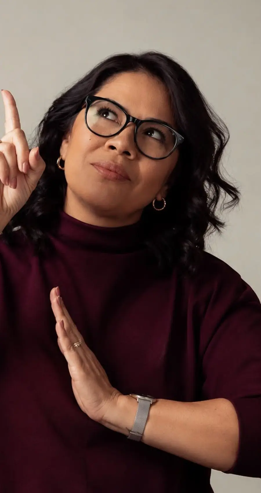
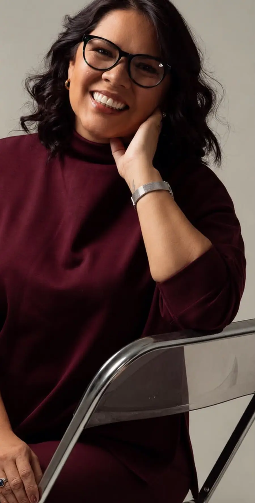

Presencial e on-line
Psicoterapia individual
Um espaço seguro para compreender, ressignificar e construir novas possibilidades para a sua vida.

- Jovens
- Adultos
- Idosos


Psicóloga clínica
CRP 09/23709
Toda história pode ser um novo começo.
Agendar consultaEscolha o caminho e fale direto comigo pelo WhatsApp.
Presencial e on-line
Um espaço seguro para compreender, ressignificar e construir novas possibilidades para a sua vida.

Para empreendedores
Um olhar para quem está por trás do negócio: as escolhas, as relações e o peso de empreender.

Psicologia · pessoas · vida real

Minha trajetória até a Psicologia não começou na Psicologia. A primeira graduação foi em Administração, e foi entre organizações, pessoas e relações que nasceu o meu interesse pelo humano por trás dos papéis que ocupamos.
Hoje olho para cada pessoa de forma integral: a sua história, os seus vínculos, o seu trabalho e as suas escolhas. Atendo com uma abordagem integrativa e psicanalítica, unindo ciência, escuta e vida real.
Não penso o sujeito em partes.
Sim. Atendo presencialmente em Goiânia e on-line, por videochamada, onde você estiver.
Para jovens, adultos e idosos que querem compreender o que sentem, cuidar das suas relações e construir novos caminhos.
É olhar para você por inteiro: história, vínculos, trabalho e escolhas. Uno a psicanálise a outros recursos da Psicologia para que o processo faça sentido para a sua vida real.
É só me chamar no WhatsApp. Conte um pouco do que te trouxe até aqui e combinamos o melhor horário e formato para você.